Отчет FastReport — документ, который сгенерирован на основе записей разделов Creatio в формате *.pdf.
Настроить доступ к разделу Настройка отчетов
Доступ к разделу Настройка отчетов (Report setup) настраивается на уровне системных операций. Если пользователь не имеет доступа к разделу Настройка отчетов (Report setup), то отображается стандартное сообщение с указанием операции и недостающих прав. По умолчанию доступ к основным системным операциям имеют только администраторы приложения. Creatio предоставляет возможность настройки доступа к системным операциям для пользователей или групп пользователей. Подробнее читайте в статье Настроить права доступа на системные операции.
Чтобы настроить доступ к разделу Настройка отчетов (Report setup):
- Перейдите в дизайнер системы по кнопке
 . В блоке Пользователи и администрирование (Users and administration) перейдите по ссылке Права доступа на операции (Operation permissions).
. В блоке Пользователи и администрирование (Users and administration) перейдите по ссылке Права доступа на операции (Operation permissions). - Выберите системную операцию Доступ к разделу "Настройка отчетов" (Access to "Report setup" section, код CanManageReports).
- На детали Доступ к операции (Operation permission) нажмите 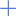 и укажите получателя прав.
В результате запись отобразится на детали Доступ к операции (Operation permission) в колонке Уровень доступа (Access level) со значением Да (Yes). Пользователи, которые входят в указанную роль, получат доступ к системной операции Доступ к разделу "Настройка отчетов" (Access to "Report setup" section, код CanManageReports).
Создать простой отчет FastReport
-
Создайте отчет FastReport.
- Перейдите в дизайнер системы по кнопке
 . В блоке Настройка системы (System setup) перейдите по ссылке Настройка отчетов (Report setup).
. В блоке Настройка системы (System setup) перейдите по ссылке Настройка отчетов (Report setup). -
Выполните действие Добавить отчет —>FastReport (New report —>FastReport).
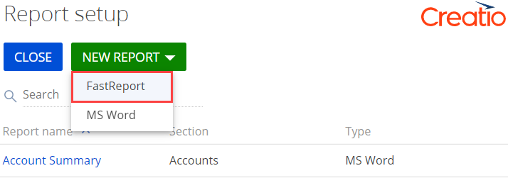 -
На панели свойств заполните свойства отчета:
- Название отчета (Report title) — пользовательское название отчета (обязательное свойство). Отображается на соответствующей панели инструментов, которая зависит от установленных признаков Отображать в разделе (Show in the section list view), Отображать на странице записи (Show in the section record page), Отображать в аналитике раздела (Show in the section analytics view).
- Раздел (Section) — выберите раздел, из которого планируется генерировать отчет (обязательное свойство). Например, чтобы отобразить отчет в разделе Контрагенты (Accounts), в выпадающем списке выберите соответствующий раздел.
- Признак Отображать в разделе (Show in the section list view) — указывает необходимость отображения отчета в выпадающем меню кнопки Печать (Print) панели инструментов раздела.
- Признак Отображать на странице записи (Show in the section record page) — указывает необходимость отображения отчета в выпадающем меню кнопки Печать (Print) панели инструментов страницы записи.
- Признак Отображать в аналитике раздела (Show in the section analytics view) — указывает необходимость отображения отчета в выпадающем меню кнопки Отчеты (Reports) панели инструментов аналитики раздела. При установленном признаке позволяет использовать пользовательскую страницу дополнительной фильтрации записей для отчета.
- Страница фильтрации (Filter page) — пользовательская страница дополнительной фильтрации записей для отчета. Свойство отображается при установленном признаке Отображать в аналитике раздела (Show in the section analytics view). Позволяет задать параметры фильтрации записей после выбора отчета в выпадающем меню кнопки Отчеты (Reports) аналитики раздела. Можно выбрать стандартную страницу фильтрации SimpleReportFilterPage или создать пользовательскую страницу фильтрации. Для пользовательской страницы фильтрации в качестве родительского объекта (обязательное свойство Родительский объект (Parent object) клиентской схемы) выберите схему BaseReportFilterPage пакета FastReport.
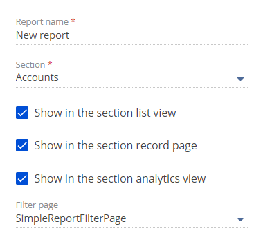Страница фильтрации SimpleReportFilterPage — клиентская схема, которая содержит реализацию стандартных простых фильтров.
Параметры фильтрации, которые позволяет выбрать страница фильтрации SimpleReportFilterPage:
- По выделенным записям (Selected records).
- По отфильтрованным в разделе записям (Filtered records in list).
- По всем записям без учета фильтрации (All records in list).
- Перейдите в дизайнер системы по кнопке
-
Укажите источники данных.
-
В блоке Укажите источники данных для отчета (Specify data sources for the report) рабочей области страницы настройки отчета укажите источники данных. Для указания источников данных используйте формат json.
Данные, которые необходимо указать:
- Перечень объектов.
- Колонки объектов.
- Связи колонок объектов, которые используются для получения данных.
- Локализуемые строки (опционально).
Шаблон, который необходимо использовать для указания источника данных, приведен ниже.
ProviderName — класс провайдера данных.
Schemas — структура таблиц для шаблона отчета.
TableName1...TableNameN — имена таблиц базы данных или виртуальных таблиц, колонки которых необходимо добавить в отчет.
ColumnName1...ColumnNameN — имена колонок, которые необходимо добавить в отчет.
DataValueType1...DataValueTypeN — типы данных соответствующих колонок ColumnName1...ColumnNameN.
LocalizableStrings — локализуемые строки.
LocalizableString1...LocalizableStringN — имена локализуемых строк отчета.
"DataValueType": 1 — тип данных TEXT соответствующих локализуемых строк LocalizableString1...LocalizableStringN.
DataValueType — параметр, который содержит значение из перечисления Terrasoft.core.enums.DataValueType. Перечисление Terrasoft.core.enums.DataValueType описано в Библиотеке .NET классов.
- На панели инструментов страницы настройки отчета нажмите Применить (Apply).
-
-
Реализуйте провайдер данных отчета.
Провайдер данных отчета — пользовательский класс на языке C#.
- Создайте схему типа Исходный код (Source code). Для этого воспользуйтесь инструкцией, которая приведена в статье Исходный код (C#).
-
В дизайнере исходного кода реализуйте класс провайдера данных.
- В дизайнере исходного кода добавьте пространство имен Terrasoft.Configuration или любое вложенное в него пространство имен.
- Для класса добавьте атрибут [DefaultBinding] с необходимыми параметрами. Параметр Name совпадает с параметром YourProviderName, который был указан в источнике данных.
- Создайте класс, который является наследником Terrasoft.Configuration.Reporting.FastReport.IFastReportDataSourceDataProvider.
-
Реализуйте методы класса провайдера данных.
- GetLocalizableStrings(UserConnection) — метод, который локализует поля отчета.
- ExtractFilterFromParameters(UserConnection, Guid, IReadOnlyDictionary) — метод, который добавляет фильтры интерфейса.
- GetData(UserConnection, IReadOnlyDictionary) — метод, который возвращает значение типа Task<ReportDataDictionary>. Содержит реализацию логики получения данных отчета.
-
Настройте шаблон отчета.
-
Скачайте файл отчета FastReport. Для этого в блоке Скачайте файл с источниками данных и сформируйте шаблон отчета (Download file with data sources to design a report in the FastReport Designer) рабочей области страницы настройки отчета нажмите кнопку Скачать файл (Download file).
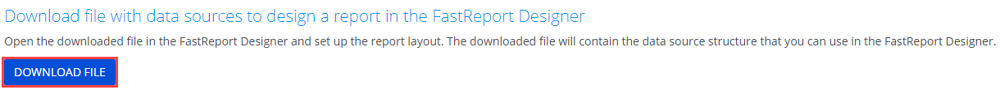В результате скачан файл в формате *.frx.
-
Откройте шаблон отчета.
-
Откройте дизайнер отчетов FastReport.
Компоненты, которые необходимы для работы дизайнера отчетов FastReport:
- Операционная система Windows.
- 64-разрядный Microsoft .Net Framework 4.7.2.
Разархивируйте *.zip-архив и запустите файл Terrasoft.Reporting.FastReport.Designer.exe.
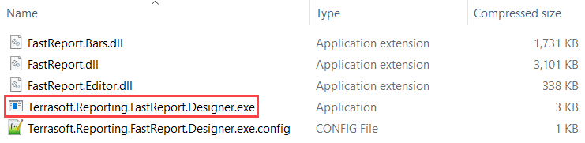 -
Выберите отчет FastReport, который планируется настроить. Для этого в блоке Open a Recent Item окна Welcome to FastReport нажмите на кнопку Open....
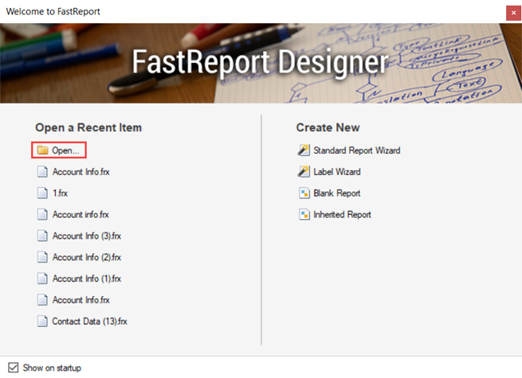 -
Перейдите в каталог со скачанным отчетом (обычно это каталог Downloads), выберите предварительно скачанный *.frx-файл и нажмите на кнопку Open.
В шаблоне сохраняется структура источников данных, которая реализована на странице настройки отчета.
-
-
Настройте шаблон отчета. Выполнение настройки шаблона описано в официальной документации FastReport.
Поскольку дизайнер отчетов FastReport является сторонним приложением, функция предпросмотра настроенного отчета недоступна.
-
Сохраните шаблон отчета. Для этого в меню File панели инструментов нажмите на кнопку Save.
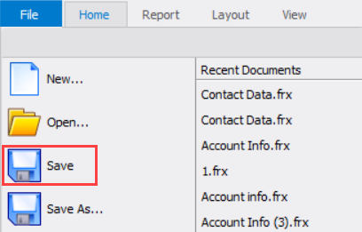 -
Загрузите настроенный шаблон отчета в Creatio.
-
В блоке Загрузите настроенный шаблон отчета в Creatio (Import a file with the report template) рабочей области страницы настройки отчета нажмите на кнопку Загрузить шаблон (Upload template).
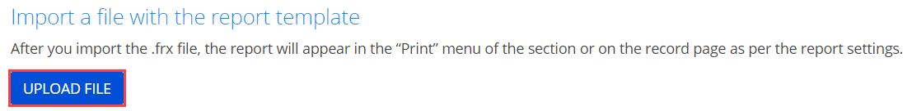 - Перейдите в каталог с настроенным шаблоном отчета (обычно это каталог Downloads), выберите файл с отчетом и нажмите на кнопку Open.
-
В результате настроенный шаблон отчета загружен в Creatio.
-
Способы генерации отчета FastReport, которые зависят от настроек на странице настройки отчета:
- Выпадающее меню кнопки Печать (Print) панели инструментов раздела.
- Выпадающее меню кнопки Отчеты (Reports) панели инструментов аналитики раздела.
- Кнопка Печать (Print) активной записи реестра раздела.
- Выпадающее меню кнопки Печать (Print) панели инструментов страницы записи.
Отчет генерируется в формате *.pdf.
Если в реестре раздела не выбрана запись, то отчет не активен.
Чтобы сгенерировать отчет FastReport по нескольким записям раздела:
- Обновите страницу соответствующего раздела.
-
Выберите несколько записей раздела.
Способы выбора нескольких записей раздела:
-
В реестре раздела (на странице настройки отчета установлен признак Отображать в разделе (Show in the section list view)). Для этого на панели инструментов раздела выполните действие Действия —> Выбрать несколько записей (Actions —> Select multiple records).
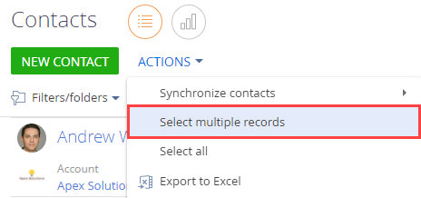 -
В аналитике раздела (на странице настройки отчета установлен признак Отображать в аналитике раздела (Show in the section analytics view)).
- На панели инструментов раздела выполните действие Действия —> Выбрать несколько записей (Actions —> Select multiple records).
- Нажмите на кнопку .
-
В выпадающем меню кнопки Отчеты (Reports) панели инструментов раздела выберите отчет, который необходимо сгенерировать.
В результате откроется страница фильтрации.
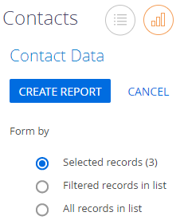 - Отфильтруйте записи (опционально). Для этого на странице фильтрации выберите опцию По отфильтрованным в разделе записям (Filtered records in list).
- Для скачивания отчета нажмите на кнопку Создать отчет (Create report).
-
Создать отчет FastReport с изображением
- Выполните шаги 1-4 алгоритма создания простого отчета FastReport.
-
На шаге 4 настройте отображение изображения в шаблоне отчета.
-
На вкладке Data панели свойств Data выполните Data Sources —> Creatio —> Data и кликните по элементу, который является изображением. Например, элемент Logo, как представлено на рисунке ниже.
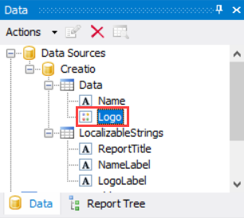 -
В группе Design панели свойств Properties элемента, который является изображением, в выпадающем списке свойства BindableControl выберите значение "Picture".
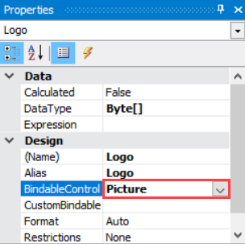 - Добавьте элемент, который является изображением, в рабочую область дизайнера отчетов.
-
Настроить мультиязычие элементов интерфейса отчета FastReport
Чтобы настроить мультиязычие элементов интерфейса отчета FastReport, используйте раздел Переводы (Translations) дизайнера системы. Работа с разделом Переводы (Translations) описана в статье Перевести элементы интерфейса в разделе Переводы.
Особенности поиска элементов интерфейса отчета FastReport в разделе Переводы (Translations):
- Для поиска ранее локализуемых строк отчета используйте шаблон ключа Configuration:НазваниеCхемы (например, Configuration:UsrContactDataSourceCode).
- Для поиска полей отчета используйте шаблон ключа Configuration:НазваниеСхемы:НазваниеПоля.Value (например, Configuration:UsrContactDataSourceCode:LocalizableStrings.ReportTitle.Value).
- Для поиска отображаемого названия отчета при установленых на странице настройки отчета признаках Отображать в разделе (Show in the section list view) и Отображать на странице записи (Show in the section record page) используйте шаблон ключа Configuration:НазваниеСхемы:Caption (например, Configuration:UsrContactDataSourceCode:Caption).
- Для поиска отображаемого названия отчета при установленом на странице настройки отчета признаке Отображать в аналитике раздела (Show in the section analytics view) используйте шаблон ключа Data:SysModuleAnalyticsReport.Caption:ИдентификаторПоля (например, Data:SysModuleAnalyticsReport.Caption:d52e8b78-772b-77ee-3394-bdb3616d859a).
Если на странице настройки отчета установлен хотя бы один из признаков Отображать в разделе (Show in the section list view), Отображать на странице записи или Отображать в аналитике раздела (Show in the section analytics view), то обязательно выполняется перевод отображаемого названия отчета.
Привязать отчет FastReport к пакету
- Перейдите в раздел Конфигурация (Configuration) и выберите пользовательский пакет, в который будет добавлена схема.
-
На панели инструментов реестра раздела нажмите Добавить —> Данные (Add —> Data).
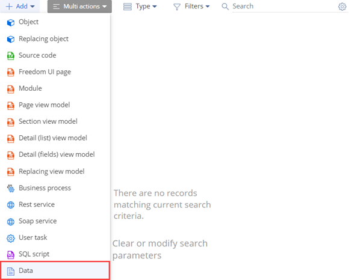 -
Выполните привязку данных. Для этого воспользуйтесь инструкцией, которая приведена в статье Привязать данные к пакету.
Элементы, привязку которых необходимо выполнить:
- FastReportTemplate_ReportName — шаблон отчета. Подключается по идентификатору отчета (колонка [Id] таблицы [FastReportTemplate] базы данных).
- FastReportDataSource_ReportName — источник данных отчета. Подключается по идентификатору отчета (колонка [Id] таблицы [FastReportDataSource] базы данных).
- SysModuleReport_ReportName — отчет. Подключается по идентификатору отчета (колонка [Id] таблицы [SysModuleReport] базы данных).